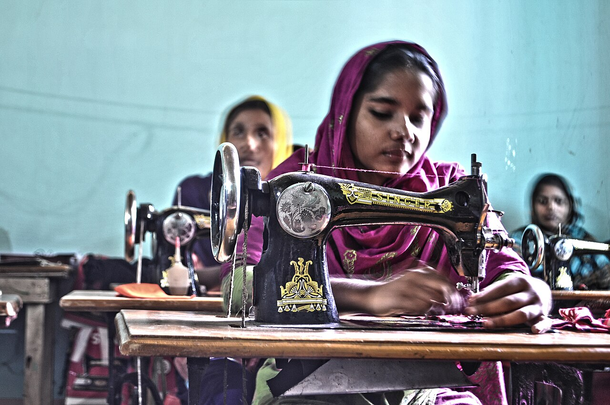

Admission 2026–27ভর্তি ২০২৬–২৭
Diploma entrance results will be published on 30 Octoberডিপ্লোমা ভর্তি পরীক্ষার ফল ৩০ অক্টোবর প্রকাশিত হবে
Vocational (SSC Vocational) 2027 applications are open until 15 November.ভোকেশনাল (এসএসসি ভোকেশনাল) ২০২৭-এর আবেদন ১৫ নভেম্বর পর্যন্ত চলবে।

Public insightsপাবলিক তথ্য
Open figures on textile education, by divisionবিভাগভিত্তিক টেক্সটাইল শিক্ষার উন্মুক্ত তথ্য
Enrolment, institutions and attendance — aggregated, with no personal data.ভর্তি, প্রতিষ্ঠান ও উপস্থিতি — সমষ্টিগত, কোনো ব্যক্তিগত তথ্য ছাড়া।
Why this platformকেন এই প্ল্যাটফর্ম
One source of truth connecting every textile institution with the Ministry — and with the people they serve.একটি একক তথ্যভান্ডার, যা প্রতিটি টেক্সটাইল প্রতিষ্ঠানকে মন্ত্রণালয় ও সেবাগ্রহীতাদের সঙ্গে যুক্ত করে।
- 01০১
Public informationপাবলিক তথ্য
Admissions, notices, results and certificate verification for every citizen.প্রত্যেক নাগরিকের জন্য ভর্তি, নোটিশ, ফলাফল ও সনদ যাচাই।
- 02০২
Institutional operationsপ্রাতিষ্ঠানিক কার্যক্রম
Classes, attendance, results, finance, assets and requests — inside each institution.প্রতিটি প্রতিষ্ঠানের ক্লাস, হাজিরা, ফলাফল, অর্থ, সম্পদ ও আবেদন।
- 03০৩
National oversightজাতীয় তত্ত্বাবধান
Ministry, division and district views with approvals and consolidated reports.অনুমোদন ও সমন্বিত প্রতিবেদনসহ মন্ত্রণালয়, বিভাগ ও জেলা পর্যায়ের দৃশ্য।

About usআমাদের সম্পর্কে
Under the Department of Textiles, for the Ministry of Textiles and Juteবস্ত্র অধিদপ্তরের অধীনে, বস্ত্র ও পাট মন্ত্রণালয়ের জন্য
The platform covers three types of government textile institutions across all eight divisions. Each institution manages its own work; the Ministry sees the whole picture.প্ল্যাটফর্মটি আট বিভাগের তিন ধরনের সরকারি টেক্সটাইল প্রতিষ্ঠানকে অন্তর্ভুক্ত করে। প্রতিটি প্রতিষ্ঠান নিজের কাজ পরিচালনা করে; মন্ত্রণালয় পূর্ণ চিত্র দেখে।
- 8৮Textile Engineering Collegesটেক্সটাইল ইঞ্জিনিয়ারিং কলেজ
- 10১০Textile Institutesটেক্সটাইল ইনস্টিটিউট
- 41৪১Textile Vocational Institutesটেক্সটাইল ভোকেশনাল ইনস্টিটিউট
Public servicesপাবলিক সেবা
How can we help you?আমরা কীভাবে সাহায্য করতে পারি?
Apply, track and verify online — without visiting an office.অফিসে না গিয়ে অনলাইনে আবেদন, ট্র্যাক ও যাচাই করুন।
Public insightsপাবলিক তথ্য
Where textile education happensটেক্সটাইল শিক্ষা কোথায় হয়
Select a division on the map to see its institutions, students and today’s attendance. Public figures are aggregated.মানচিত্রে একটি বিভাগ বেছে নিয়ে তার প্রতিষ্ঠান, শিক্ষার্থী ও আজকের উপস্থিতি দেখুন। পাবলিক তথ্য সমষ্টিগত।
Chattogramচট্টগ্রাম
- Institutionsপ্রতিষ্ঠান
- 9৯
- Studentsশিক্ষার্থী
- 6,120৬,১২০
- Attendance todayআজ উপস্থিতি
- 79.2%৭৯.২%
Demo dataডেমো তথ্য Shading: number of institutions.রঙের গাঢ়তা: প্রতিষ্ঠানের সংখ্যা। Boundaries: geoBoundaries gbOpen BGD ADM1/ADM2 (CC BY 4.0)

Admissionsভর্তি
Admission 2026–27ভর্তি ২০২৬–২৭
Diploma in Textile Engineering 2026–27ডিপ্লোমা ইন টেক্সটাইল ইঞ্জিনিয়ারিং ২০২৬–২৭
- 01–31 Aug 2026০১–৩১ আগস্ট ২০২৬Online applicationঅনলাইন আবেদন
- By 31 Aug 2026By ৩১ আগস্ট ২০২৬Application feeআবেদন ফি
- 20 Sep 2026২০ সেপ্টেম্বর ২০২৬Entrance testভর্তি পরীক্ষা
- 30 Oct 2026৩০ অক্টোবর ২০২৬Result publicationফলাফল প্রকাশNextপরবর্তী
- 05 Nov 2026০৫ নভেম্বর ২০২৬Institution allocationপ্রতিষ্ঠান বরাদ্দ
- 10–20 Nov 2026১০–২০ নভেম্বর ২০২৬Final admissionচূড়ান্ত ভর্তি
- Nov 2026নভেম্বর ২০২৬Student ID issuedশিক্ষার্থী আইডি প্রদান
Your temporary application ID becomes your student ID once final admission is complete.চূড়ান্ত ভর্তি সম্পন্ন হলে আপনার অস্থায়ী আবেদন আইডি শিক্ষার্থী আইডিতে রূপান্তরিত হয়।
Noticeনোটিশ
Notices and announcementsনোটিশ ও ঘোষণা
- Admissionভর্তিOnline applications open for Textile Vocational (SSC Vocational) 2027টেক্সটাইল ভোকেশনাল (এসএসসি ভোকেশনাল) ২০২৭-এ অনলাইন আবেদন শুরু
- Examination & Resultপরীক্ষা ও ফলাফলDiploma semester final examination routine — January 2027ডিপ্লোমা সেমিস্টার সমাপনী পরীক্ষার রুটিন — জানুয়ারি ২০২৭
- AcademicএকাডেমিকAcademic calendar 2027 for all textile institutesসকল টেক্সটাইল ইনস্টিটিউটের একাডেমিক ক্যালেন্ডার ২০২৭
- Teacher / Staffশিক্ষক / কর্মচারীTeacher training on the live attendance system — schedule by divisionলাইভ হাজিরা সিস্টেমে শিক্ষক প্রশিক্ষণ — বিভাগভিত্তিক সময়সূচি
- Institutionপ্রতিষ্ঠানAnnual asset verification: institutions must submit by 31 Octoberবার্ষিক সম্পদ যাচাই: ৩১ অক্টোবরের মধ্যে প্রতিষ্ঠানগুলোকে জমা দিতে হবে
- Circular / Generalপরিপত্র / সাধারণDurga Puja holidays: all institutions closed 19–22 Octoberদুর্গাপূজার ছুটি: ১৯–২২ অক্টোবর সকল প্রতিষ্ঠান বন্ধ থাকবে
- Tender / Procurementদরপত্র / ক্রয়Tender: supply of 24 rapier looms for four textile institutesদরপত্র: চারটি টেক্সটাইল ইনস্টিটিউটের জন্য ২৪টি র্যাপিয়ার লুম সরবরাহ
- Examination & Resultপরীক্ষা ও ফলাফলSemester 2 results published — Diploma in Textile Engineeringসেমিস্টার ২-এর ফল প্রকাশ — ডিপ্লোমা ইন টেক্সটাইল ইঞ্জিনিয়ারিং
No other notices in this category this month.এই মাসে এই বিভাগে আর কোনো নোটিশ নেই।
Galleryগ্যালারি
Life in our institutionsআমাদের প্রতিষ্ঠানের জীবন
Fabric Day exhibition by textile engineering studentsটেক্সটাইল ইঞ্জিনিয়ারিং শিক্ষার্থীদের ফেব্রিক ডে প্রদর্শনী
Weaving practical in a loom workshopলুম ওয়ার্কশপে বয়ন ব্যবহারিক
Industry attachment: garment quality inspectionশিল্প সংযুক্তি: পোশাকের মান যাচাই
Textile museum and learning resource centreটেক্সটাইল জাদুঘর ও শিখন সম্পদ কেন্দ্র
Screen-printing training for apparel studentsঅ্যাপারেল শিক্ষার্থীদের স্ক্রিন প্রিন্টিং প্রশিক্ষণ
Handloom heritage workshopতাঁত ঐতিহ্য কর্মশালা
Vocational sewing classভোকেশনাল সেলাই ক্লাস
Jamdani weaving demonstrationজামদানি বয়ন প্রদর্শনী
Helpসহায়তা
Support in Bangla, every working dayপ্রতি কর্মদিবসে বাংলায় সহায়তা
Call the help deskহেল্প ডেস্কে কল করুন16xxx১৬xxx
How do I apply for admission?কীভাবে ভর্তির আবেদন করব?
Open Admissions, choose your programme and fill in the online form. You will receive an application ID by SMS.ভর্তি অংশে গিয়ে প্রোগ্রাম বেছে অনলাইন ফরম পূরণ করুন। এসএমএসে একটি আবেদন আইডি পাবেন।
I lost my application ID. What should I do?আবেদন আইডি হারিয়ে ফেলেছি। কী করব?
Use "Forgot application ID" on the candidate sign-in page with your mobile number and date of birth.প্রার্থী লগইন পাতায় "আবেদন আইডি ভুলে গেছি" থেকে মোবাইল নম্বর ও জন্মতারিখ দিয়ে উদ্ধার করুন।
When does my candidate ID become a student ID?প্রার্থী আইডি কখন শিক্ষার্থী আইডি হবে?
After final admission is complete at the allocated institution. Your account moves to the student portal automatically.বরাদ্দকৃত প্রতিষ্ঠানে চূড়ান্ত ভর্তি সম্পন্ন হলে। আপনার অ্যাকাউন্ট স্বয়ংক্রিয়ভাবে স্টুডেন্ট পোর্টালে যাবে।